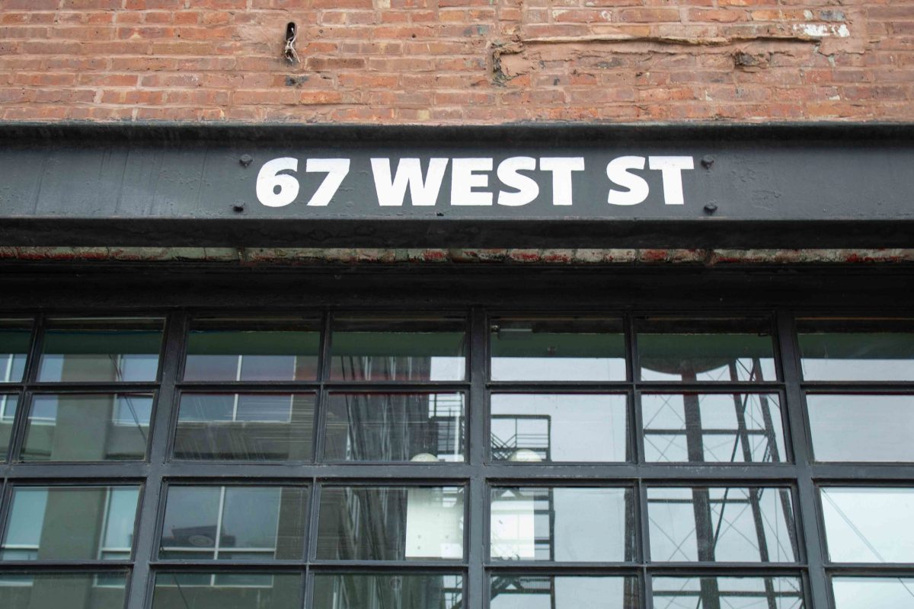

menu
Ben Weiss
Resume
Photos
Writing
close
Ben Weiss
Contact:
Writing
Photos
Resume
Featured Clips
The Venezuelans Trying to Escape Their Country Through Video Game Grunt Work
Slate
, Aug. 25, 2021
Take A Ride With The Subway's 'Happiest Conductor'
Gothamist
, Aug. 21, 2019
I Took a Double-Decker Tour of NYC During a Raging Pandemic
Bedford + Bowery
, Dec. 18, 2020
Greenpoint Tenants Fear Eviction After 7-year Court Case with Landlord
Greenpointers
, March 22, 2021
Meet Crackhead Barney, TikTok’s outrageous ambush interviewer
Input
, Dec. 2, 2021
Other Selected Writing
Burglar Breaks Into East Village Mainstay B&H Dairy
Bedford + Bowery
, Nov. 24, 2020
A Musical Ensemble in Brooklyn Urges Voters to the Polls
Bedford + Bowery
, Nov. 3, 2020

Greenpoint Studio Spaces Empty as Landlord Offers Few Concessions
Greenpointers
, Sept. 9, 2020
Protestors Continue to Gather in McCarren Park, Months After George Floyd's Death
Greenpointers
, Aug. 18, 2020
How a Photo of Trash in Greenpoint Became a Photo of Seattle's ‘Autonomous Zone’
Greenpointers
, Aug. 13, 2020
North Brooklyn's Open Streets Receive Volunteer Support
Greenpointers
, Aug. 7, 2020
Meet Riley Goodside: The Man Behind the Mask, Goggles, Gloves and Glasses
Greenpointers
, June 26, 2020
Elementary School in Williamsburg Reports Positive Coronavirus Case Just As City Closes Schools
Bklyner
, March 18, 2020
Greenpoint's Elementary Schools Overcrowded, Residents Say
Greenpointers
, Oct. 25, 2019
Yemeni Bodega Owners Are Making the ‘Post’ Feel the Pinch
The Indypendent
, June 2, 2019
Key Food Meat Department Locked Out Due to Contract Dispute
Greenpointers
, April 9, 2019
De Blasio's Record on NYCHA
Gotham Gazette
, Nov. 6, 2017
Key to Affordable Housing Development, Vacant Lots Remain Source of Controversy
Gotham Gazette
, Oct. 17, 2017